FRONT DOOR > REASSEMBLY |
| 1. INSTALL FRONT DOOR WEATHERSTRIP LH |
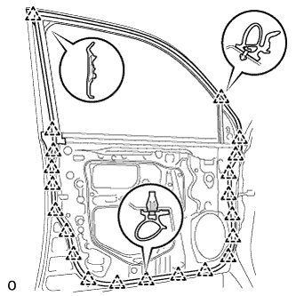 |
Attach the 21 clips to install the weatherstrip.
| 2. INSTALL FRONT DOOR CHECK ASSEMBLY LH |
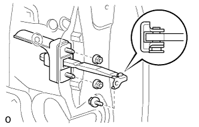 |
Apply MP grease to the sliding areas of the door check.
Install the door check to the door panel with the 2 nuts.
Apply adhesive to the threads of the bolt.
Install the bolt.
| 3. INSTALL FRONT DOOR CHECK COVER LH |
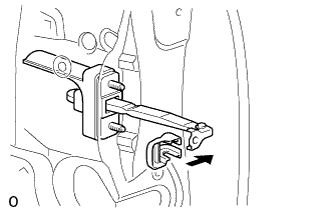 |
Install the door check cover.
| 4. INSTALL FRONT NO. 2 DOOR STIFFENER CUSHION |
Clean the installation surface.
Using a heat light, heat the installation surface.
| Item | Temperature |
| Door Stiffener Cushion | 20 to 30°C (68 to 86°F) |
| Vehicle Body | 40 to 60°C (104 to 140°F) |
Remove the double-sided tape from the installation surface.
Wipe off any tape adhesive residue with cleaner.
Install a new door stiffener cushion.
Using a heat light, heat a new door stiffener cushion and the installation surface.
| Item | Temperature |
| Door Stiffener Cushion | 20 to 30°C (68 to 86°F) |
| Vehicle Body | 40 to 60°C (104 to 140°F) |
Remove the peeling paper from the face of the door stiffener cushion.
Attach the 2 clamps and double-sided tape to install the door stiffener cushion.
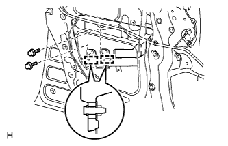 |
Install the 2 bolts.
| 5. INSTALL DOOR ELECTRICAL KEY OSCILLATOR |
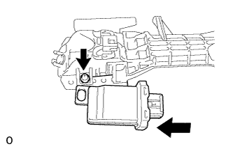 |
Install the door electrical key oscillator with the screw.
| 6. INSTALL FRONT DOOR LOCK OPEN ROD LH |
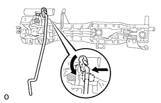 |
Install the front door lock open rod as shown in the illustration.
| 7. INSTALL NO. 2 ELECTRICAL KEY WIRE HARNESS |
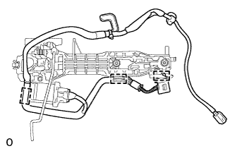 |
Connect the connector.
Attach the 3 clamps to install the wire harness to the frame.
| 8. INSTALL FRONT DOOR OUTSIDE HANDLE FRAME SUB-ASSEMBLY LH |
 |
Attach the 2 claws to install the front door outside handle frame sub-assembly.
 |
Using a T30 "TORX" wrench, install the front door outside handle frame sub-assembly with the screw.
| 9. INSTALL FRONT DOOR INSIDE LOCKING CABLE ASSEMBLY LH |
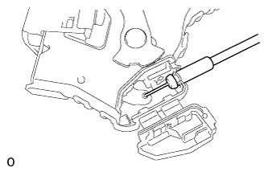 |
Install the front door inside locking cable.
Attach the 3 claws.
| 10. INSTALL FRONT DOOR LOCK REMOTE CONTROL CABLE ASSEMBLY LH |
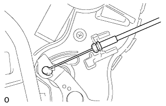 |
Install the front door lock remote control cable.
| 11. INSTALL FRONT DOOR LOCK ASSEMBLY LH |
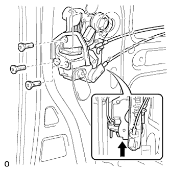 |
Apply MP grease to the sliding parts of the front door lock assembly.
Insert the front door lock open rod to the front door lock assembly.
Make sure that the front door lock open rod is securely connected to the front door lock assembly.
Using a T30 "TORX" wrench, install the door lock with the 3 screws.
| 12. INSTALL FRONT DOOR REAR OUTSIDE HANDLE PAD LH |
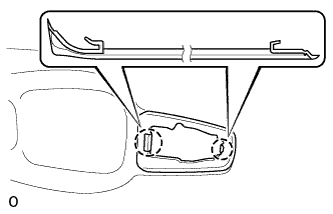 |
Attach the 2 claws to install the pad.
| 13. INSTALL FRONT DOOR FRONT OUTSIDE HANDLE PAD LH |
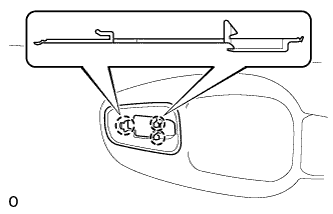 |
Attach the 3 claws to install the pad.
| 14. INSTALL FRONT DOOR HANDLE ASSEMBLY OUTSIDE LH |
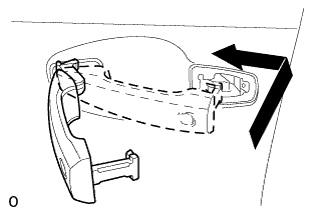 |
Pull and hold the bellcrank lever of the frame.
Install the handle by pushing it in the direction of the arrow in the illustration.
 |
Using a T30 ''TORX'' socket, install the screw.
Connect the connector.
| 15. INSTALL FRONT DOOR OUTSIDE HANDLE COVER LH |
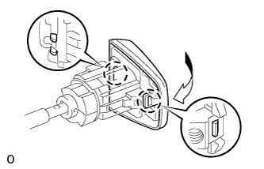 |
Attach the 2 claws to install the front door outside handle cover to the front door lock cylinder.
 |
Using a T30 ''TORX'' socket, install the cover (with the door lock cylinder) with the screw.
Install the hole plug.
| 16. INSTALL FRONT POWER WINDOW REGULATOR MOTOR ASSEMBLY LH |
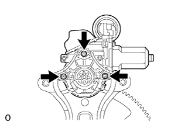 |
Apply MP grease to the sliding and rotating areas of the regulator motor.
Using a T25 ''TORX'' driver, install the motor with the 3 screws.
| 17. INSTALL FRONT DOOR WINDOW REGULATOR SUB-ASSEMBLY LH |
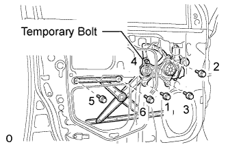 |
Apply MP grease to the sliding and rotating areas of the window regulator.
Loosely install the temporary bolt onto the window regulator.
Insert the window regulator into the door panel. Use the temporary bolt to hang the window regulator on the door panel.
Temporarily install the window regulator with the 5 bolts.
Tighten the 6 bolts in the order shown in the illustration.
| 18. INSTALL FRONT DOOR REAR WINDOW FRAME MOULDING LH |
Clean the vehicle body surface.
Using a heat light, heat the vehicle body surface.
Remove the double-sided tape from the vehicle body surface.
Wipe off any tape adhesive residue with cleaner.
Install a new window frame moulding.
Using a heat light, heat a new window frame moulding and the vehicle body surface.
Remove the peeling paper from the face of the window frame moulding.
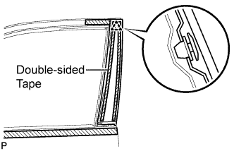 |
Attach the clip and double-sided tape to install the window frame moulding.
| 19. INSTALL FRONT DOOR BELT MOULDING SUB-ASSEMBLY LH |
 |
Attach the claw to install the belt moulding.
| 20. INSTALL LOWER DOOR FRAME GARNISH LH |
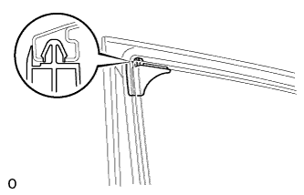 |
Attach a new clip and install the door frame garnish.
| 21. INSTALL FRONT DOOR REAR LOWER FRAME SUB-ASSEMBLY LH |
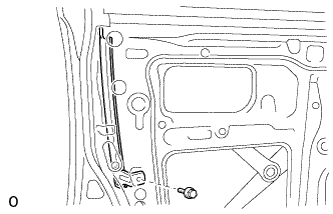 |
Install the frame with the bolt.
| 22. INSTALL FRONT DOOR GLASS RUN LH |
 |
Install the front door glass run.
| 23. INSTALL FRONT DOOR GLASS SUB-ASSEMBLY LH |
 |
Insert the door glass into the door panel along the glass run as indicated by the arrows in the illustration.
 |
Install the door glass to the window regulator with the 2 bolts.
| 24. INSTALL FRONT INNER DOOR GLASS WEATHERSTRIP LH |
Install the front inner door glass weatherstrip LH.
| 25. INSTALL FRONT DOOR SERVICE HOLE COVER LH |
 |
Apply butyl tape to the door.
Pass the front door lock remote control cable and front door inside locking cable through a new front door service hole cover.
 |
Connect the 2 connectors.
Attach the 9 clamps.
Install the bolt as shown in the illustration.
| 26. INSTALL SIDE AIRBAG SENSOR ASSEMBLY LH |
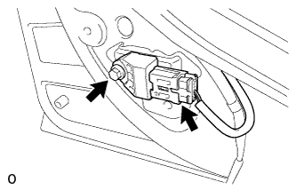 |
Check that the engine switch is off.
Check that the cable is disconnected from the battery negative (-) terminal.
Install the side airbag sensor with the bolt.
Check that there is no looseness in the installation parts of the side airbag sensor.
Connect the connector.
| 27. INSTALL FRONT NO. 1 SPEAKER ASSEMBLY |
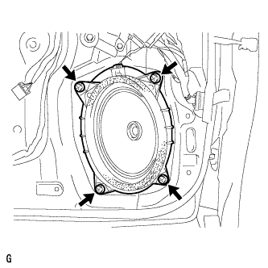 |
Connect the speaker connector.
Install the speaker with the 4 screws.
| 28. INSTALL FRONT DOOR PANEL CUSHION |
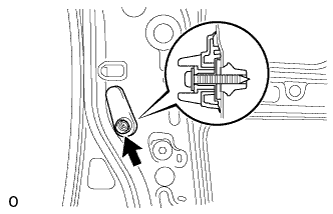 |
Install the screw and front door panel cushion.
| 29. INSTALL OUTER MIRROR CONTROL ECU ASSEMBLY (w/ Retract Mirror) |
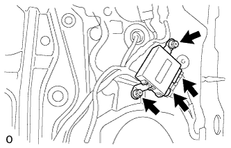 |
Connect the 2 connectors.
Install the 2 screws and outer mirror control ECU.
| 30. INSTALL OUTER REAR VIEW MIRROR ASSEMBLY LH |
 |
Attach the claw and Install the mirror with the 3 nuts.
Attach the clamp.
Connect the connector labeled A.
| 31. INSTALL FRONT DOOR INSIDE HANDLE BEZEL LH |
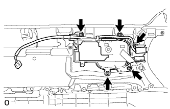 |
Install the front door inside handle bezel to the trim board with the 5 screws.
| 32. INSTALL FRONT DOOR INSIDE HANDLE SUB-ASSEMBLY LH |
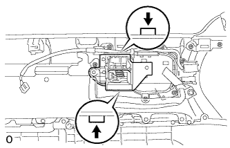 |
Attach the 2 claws to install the inside handle.
| 33. INSTALL SEAT MEMORY SWITCH |
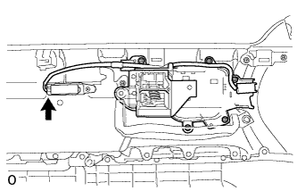 |
Install the seat memory to the trim board with the screw.
Connect the connector.
| 34. INSTALL COURTESY LIGHT ASSEMBLY (w/ Courtesy Light) |
 |
Connect the connector.
Attach the claw of the courtesy light to the front door trim.
| 35. INSTALL FRONT DOOR TRIM BOARD SUB-ASSEMBLY LH |
Connect the connector.
 |
Connect the front door lock remote control cable and front door inside locking cable to the front door inside handle sub-assembly.
 |
Attach the 4 claws and 13 clips to install the front door trim board sub-assembly.
Install the 3 screws.
| 36. INSTALL DOOR ASSIST GRIP COVER LH |
 |
Attach the 8 claws to install the door assist grip cover to the door trim panel.
| 37. INSTALL MULTIPLEX NETWORK MASTER SWITCH ASSEMBLY |
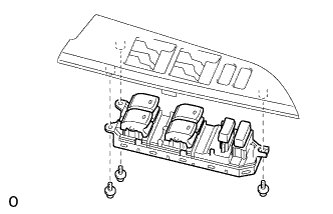 |
Install the multiplex network master switch assembly with the 3 screws.
| 38. INSTALL FRONT DOOR ARMREST BASE PANEL ASSEMBLY LH |
Connect the connector.
 |
Attach the 5 claws and install the front door armrest base panel.
| 39. INSTALL FRONT DOOR INSIDE HANDLE BEZEL LH |
 |
Attach the 4 claws to install the bezel.
| 40. INSTALL FRONT LOWER DOOR FRAME BRACKET GARNISH LH |
 |
Attach the clip and claw, and install the front door lower frame bracket garnish.
| 41. CONNECT CABLE TO NEGATIVE BATTERY TERMINAL |
| 42. CHECK SRS WARNING LIGHT |
Check the SRS warning light (Click here).